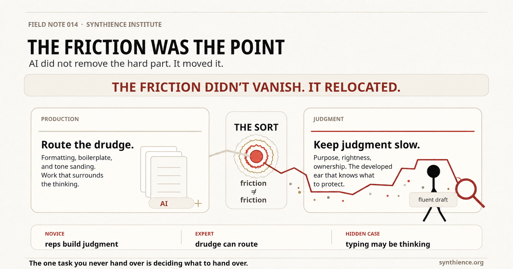

The Friction Was the Point
Three independent studies just converged on the same finding: offloading erodes what you offload. The diagnosis is real. A field note on why the usual prescription locates the threatened skill in the wrong place, and why knowing which friction to keep is harder than either side of the argument admits.

Three signals, no coordination
Three different kinds of evidence just landed on the same conclusion, and it is worth taking seriously because none of them needed the others to make the case. Researchers at Carnegie Mellon, Oxford, MIT, and UCLA ran three randomized trials on 1,222 people, gave half of them an AI assistant for a set of math and reading tasks, then pulled the assistant away without warning. The assisted group had looked sharper the whole time. The moment the tool vanished, their unaided performance fell behind. In the replication trial built to rule out other explanations, the group that had used AI solved 71 percent of the final problems on their own, against 77 percent for the people who’d never had the assistant at all. Around the same time, a multicentre study in The Lancet Gastroenterology & Hepatology found that experienced endoscopists who had grown used to AI flagging pre-cancerous growths saw their own unassisted detection rate slide from 28 percent to 22 percent after months of routine exposure. And an MIT Media Lab study using EEG found that people who wrote essays with a chatbot’s help showed measurably weaker neural connectivity than people who used a search engine or nothing at all. A lab task, a hospital, and a set of scalp electrodes did not coordinate with each other. They just kept finding the same thing.
The diagnosis is real. Cognitive offloading can erode the thing you offload, especially when it replaces the reps that would have built the capacity in the first place. We have run versions of this experiment before, with arithmetic and the calculator, with spatial memory and the turn-by-turn map. Outsource a capacity often enough and it goes quiet, then it goes. None of that is nostalgia. The struggle to structure an argument genuinely is the argument-building skill, and a person who routes that struggle away every single time will, in fact, lose it. Anyone who has watched a capable new hire stare at a blank document slightly too long, waiting for the model to start it because starting is the part they never had to learn, has seen the erosion in real time.
Where it goes wrong
The argument goes wrong one level down, in a place that is easy to miss because the surface claim is so obviously correct.
It treats all friction as the same kind of friction.
Retention-minded readers have a version of this that only holds if every avoided effort was thinking you were meant to do, but most of what people actually route to a machine is not the skill-building struggle. It is the mechanical drudge that sits around the thinking: the reformatting, the boilerplate, the fourth pass on an email whose substance you settled three passes ago and are now just sanding for tone. This case doesn’t tell those two frictions apart, so it defends the drudge alongside the substance, not because anyone’s arguing you can’t be trusted to know the difference, but because the case never draws the line that would let you.
Here is the move that gets missed. The friction did not vanish. It relocated.
In mature work, the load-bearing friction often moves away from the production struggle and into the judgment struggle: deciding what the email has to accomplish before a word exists, reading the finished draft and knowing whether it actually does that, putting your name on it and meaning it. That work does not get easier when the machine drafts faster. It gets harder, and it gets more consequential, because fluent output is more persuasive output, and a confident wrong answer is more dangerous when it arrives polished. A clumsy bad argument warns you with its clumsiness. A clean one walks straight past the guard. Strip away the production friction and you have not removed the thinking. You have removed the part that was disguising how much thinking the judgment quietly required.
So the case is right that a real skill is under threat, and it finds that skill in the wrong organ. The skill that has to stay sharp is not the skill of producing the artifact. It is the skill of deciding what the artifact is for, and of looking at a finished draft and knowing whether it is right. Those are not the same muscle.
The competence boundary
Except, and this is the objection that deserves an answer, the one that is easy to wave off and shouldn’t be, for a long time they were the same muscle. You learned to judge an argument by building arguments badly and feeling where they failed. You developed an ear for a wrong sentence by writing a thousand wrong sentences. The production reps were how the judgment got built.
That is the strongest version of the retention case, and it is correct, with one boundary it never draws: it is correct for the novice and expires as a universal rule at competence. The reps build the judgment until the judgment exists, and then the judgment is a standalone instrument that no longer depends on continued drudgery to stay calibrated. The senior editor does not keep her ear sharp by setting type. She keeps it sharp by reading. So the honest rule is not “production builds judgment” or “production is just typing.” It is both, in sequence: production builds judgment while you are acquiring it, and becomes routable once you have.
Which means the dangerous advice is not “route everything.” It is prescribing the novice’s regimen to the expert, keeping a master slow at the bench-work that only ever existed to make an apprentice, or worse, letting the apprentice route the very reps that were going to build the instrument they will spend their career using. Same offload, opposite verdict, and the only thing that tells them apart is where the person stands on the climb, which is not a fact about the person but about the person and the task together, because competence is per-domain. A master of one field is a novice the moment they step into the next, and the seniority that earned the right to route in the first will tempt them to route in the second, exactly where they can least afford it.
The third case
There is a third case, and the clean binary hides it. Sometimes the typing is where the thought ambushes you. Sometimes the fourth rewrite is the one where you find out what you actually meant, the production and the discovery fused so tightly that routing the labor would amputate the insight you didn’t yet know was coming. Writers know this one in their teeth. So the sort is not always “thinking, keep it; typing, route it.” Sometimes it is “this looks like typing but it is secretly thinking wearing typing’s clothes,” and the skill includes catching the disguise. That is not a hole in the argument. It is the argument getting honest about how hard the sort really is.
Because the sort is hard, and pretending otherwise is its own kind of offloading. Watch what indiscriminate retention actually looks like and you stop romanticizing it. It looks like a vice president at eleven at night, hand-aligning text boxes on a slide, because somewhere along the way “do it yourself” stopped being a judgment and became a reflex, friction kept not because it builds anything but because keeping it feels like rigor. That is not the thinking she was meant to do. That is the drudge wearing virtue’s jacket, and it is eating the hours she should be spending on whether the strategy in the deck is right at all. Indiscriminate retention is not the cure for indiscriminate offloading. It is the same mistake wearing the opposite coat. Both refuse the one move the moment actually demands, which is to look at a given piece of friction and decide what kind it is.
What this note doesn’t claim
And here is the part that should keep you up, the part that makes this more than a productivity tip. The sort itself requires judgment, the exact faculty that indiscriminate offloading destroys first. You need a developed ear to know which frictions to keep in order to develop the ear. Route too much too early and you lose not just the skills you offloaded but the meta-skill that would have told you which ones to protect. That is the real stakes of the moment, and no machine closes the loop for you, because the one task you can never hand over is the task of deciding what to hand over.
Keep the right tasks slow. Knowing which ones is the job now.
Further reading
- SI-WP-011: The Seat Without the Bench: the structural question this note deliberately leaves open, what happens to expertise reproduction when the reps that build a developed ear are routed away at the apprentice tier, not by any one person’s bad judgment but by everyone’s locally correct one.
- FN-010: The Approval at the End of the Loop: the mechanism behind the other open question, why an approval step can keep the form of oversight while its substance quietly degrades into confirmation, and why the friction relocating to judgment doesn’t guarantee anyone pays the cost.
- PG-014: You Don’t Have a Method Problem. You Have a Routing Problem.: the operational version of the sorting discipline, how to route production work without surrendering judgment.
- FN-013: The Teammate You Switched On: the same judgment, threatened from the other side, what happens to oversight when an embedded AI takes over the continuity of the work.
- FN-012: The Work That Looks Like Work: what happens when the form of knowledge work detaches from the function it used to stand for.
- The Orchestrator Role white papers: on the human as the seat of judgment in a human-AI workflow, holding the decisions that do not delegate.